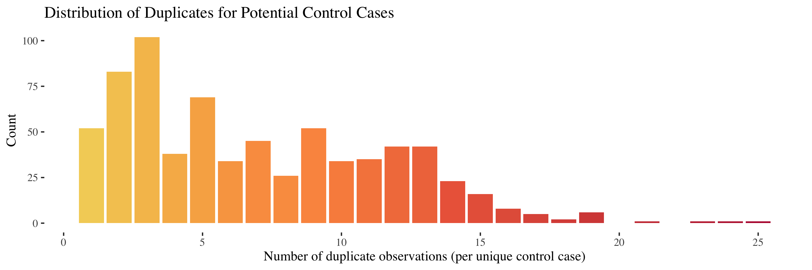
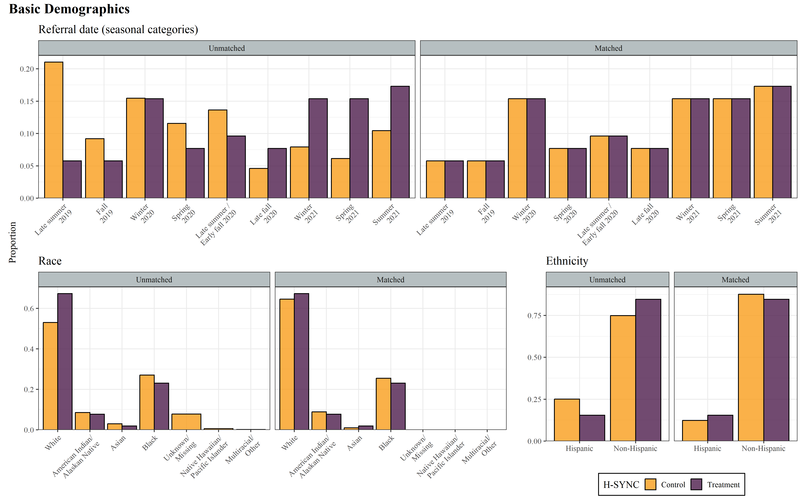
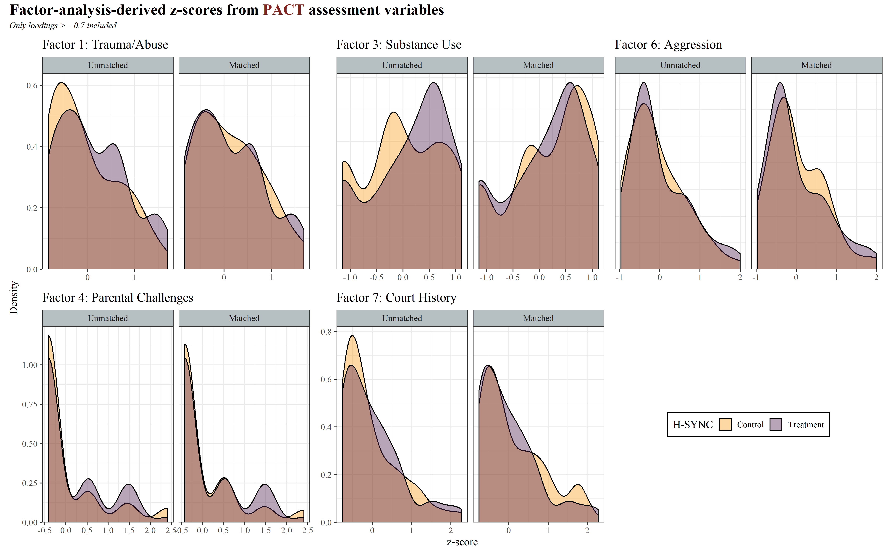
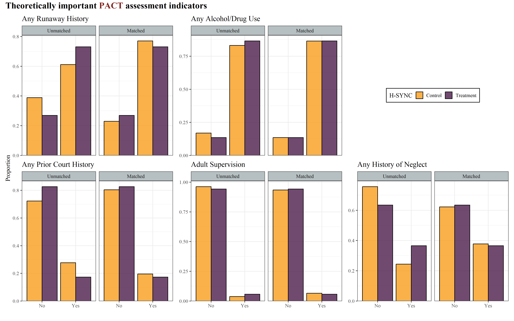
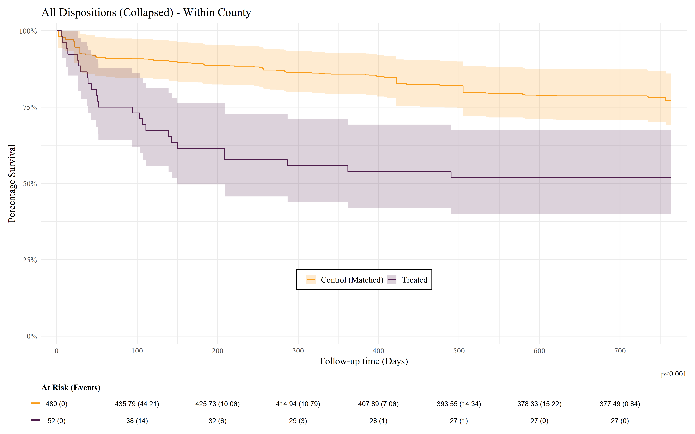
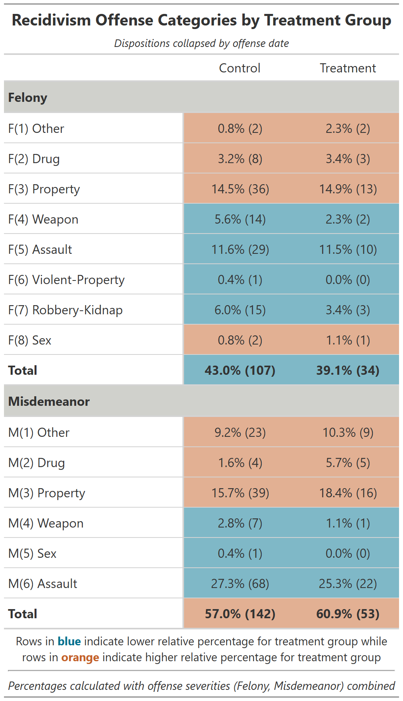
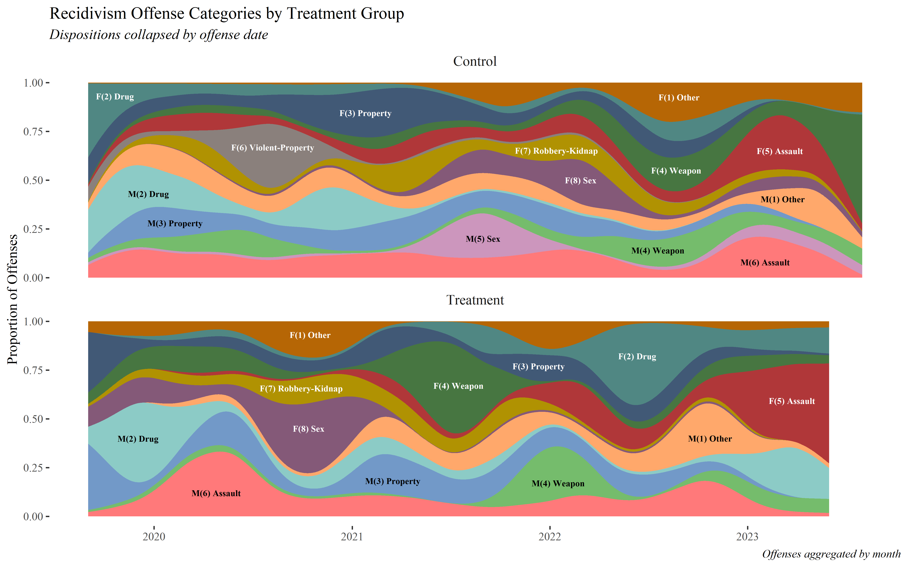
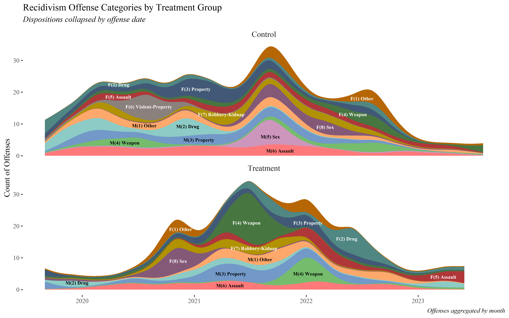
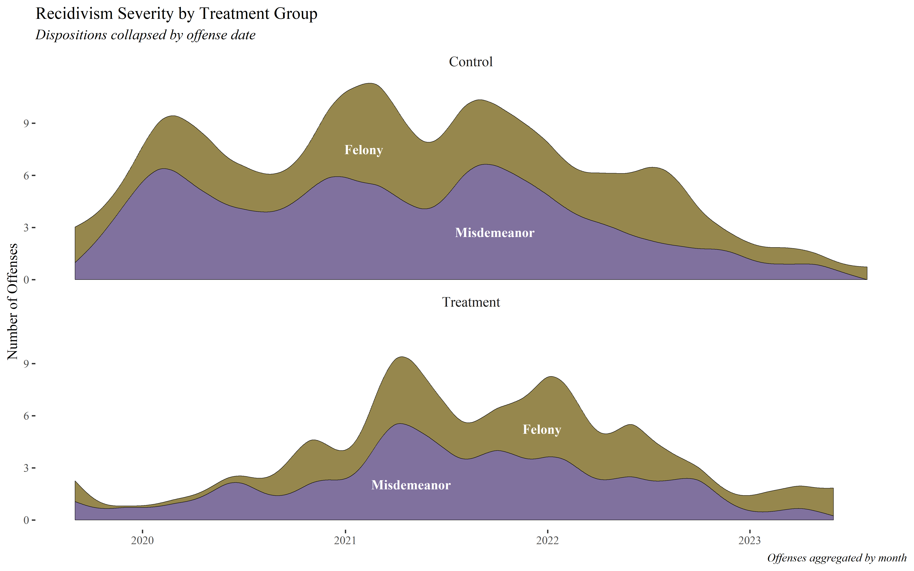

Housing Stability for Youth in Courts (H-SYNC) and Recidivism
Victoria Sass, Sarah Walker, Jerald Herting
Overview
- Background
- Motivation
- Data
- Creating Control Groups
- Calculating prior court contact
- Calculating recidivism
- Balancing the Data
- Random-Matching Dataset Search
- Balance Diagnostics
- Overall
- Covariate Balance:
Better after Matching - Covariate Balance:
Similar/Worse After Matching
- Survival Analysis Results
- All Offense Types
- Felonies
- Misdemeanors
- Recidivism Offense Types
- COVID-19
- Tables
- Offense Types
- Offense Types by Year
- Streamgraphs
- Offense Types (Proportional)
- Offense Types (Count)
- Offense Severity (Proportional)
- Offense Severity (Count)
Background
Motivation
- The H-SYNC pilot program (2019–2022) was developed by the UW CoLab in partnership with Snohomish and Kitsap County workgroups to prevent youth homelessness by identifying and supporting at-risk youth within the juvenile court system.
- Implemented in King, Snohomish, Kitsap, and Okanogan counties, the program used a stepped-care model to connect youth and their families to prevention, intervention, and housing services based on their level of need.
- Following the pilot, coordination of H-SYNC transitioned to the Y Social Impact Center at the YMCA of Greater Seattle, expanding into a statewide collaboration between juvenile courts and community service providers.
The goal of the current analysis is to evaluate if engagement with H-SYNC during the pilot program impacted recidivism compared to a matched control group.
Data
- In order to create the necessary dataset for this analysis, H-SYNC pilot study data was linked to two research databases1:
- The Assessments Research Database (ARD), which includes responses to the PACT 2.0 Full-Assessment for juveniles2.
- The Court Contact and Recidivism Database (CCRD). This resource contains all individual contacts with the Washington court system regardless of age, enabling longitudinal analysis of juvenile dispositions.
- Once these data were cleaned and merged3, H-SYNC participants with missing values on key matching variables were dropped, resulting in a final treatment group of 52 individuals.
Creating Control Groups
ARD and CCRD data were also used to construct the pool of potential controls with which to compare H-SYNC participants.
Calculating prior court contact
A key feature of creating these potential controls involved the creation of a level of prior court contact variable which could be used in the subsequent matching process. The approach was:
- Every possible control was paired with each H-SYNC participant to leverage their referral-date to the pilot program.
- Using that date as an anchor, only control cases with court contact within the prior year were retained as a potential match for that H-SYNC participant.
- For all H-SYNC participants and their respective controls, all instances of court contact prior to the referral date were summed to create a count.
- Total, felony, and misdemeanor counts were created and the date of offense was used (rather than the filing date) to ensure accurate timing.
Creating Control Groups
ARD and CCRD data were also used to construct the pool of potential controls with which to compare H-SYNC participants.
Calculating recidivism
- A survival window was calculated based on the latest referral date to the H-SYNC program (August 23, 2021) and the latest date of court contact in the CCRD data (September 26, 2023) which resulted in a span of 764 days (~ 2 years).
- This window was then used to calculated survival time between the referral date and days to reoffense, or the full period if there was no reoffense for that treatment or control case.
- Analyses were conducted on all dispositions available in CCRD as well as a collapsed version of dispositions based upon offense date1
- Only the within-county analysis with collapsed dispositions will be presented here but all analyses showed similar findings.
Balancing the Data
The following variables were used to create a balanced dataset using the MatchIt package1 in R.
Demographics
- Referral date (coarsened into 9 seasons2)
- Birth year (coarsened into 4 categories)
- County of offense3
- Sex
- Race
- Hispanic ethnicity
- Court-contact history (coarsened into a binary of 1 offense/2+ offenses)
PACT assessment
- Individual variables
- Runaway history
- Alcohol history
- Court contact history
- Adult supervision
- School enrollment
- History of neglect
- Mental health history
- z-score indicies (7) derived from a factor analysis of PACT assessment variables
Random-Matching Dataset Search
Once survival times were calculated, the resulting dataset had duplicate control cases for individuals who were flagged as a potential control for more than one referral date.
- Using parallel processing, 5 million potential matching datasets1 were created, each with only one observation per control.
- The dataset with the best balance on key metrics was selected and used for the final survival analyses.
Balance Diagnostics
Overall

Covariate Balance:
Better after Matching




Covariate Balance:
Similar/Worse after Matching

Survival Analysis Results
Within County & Dispositions Collapsed
All Offense Types

Felonies

Misdemeanors

Recidivism Offense Types
COVID-19
- Given the timing of the H-SYNC pilot program (2019-2022), there may be reason to believe that the impact of the COVID-19 pandemic (which began to spread worldwide in January 2020) and the ensuing statewide “stay-at-home” orders differentially impacted levels of recidivism between our treatment and control groups.
- Washington state had both the first confirmed case1 and deaths2 related to the pandemic in the United States.
- The state of emergency declared by Governor Jay Inslee on February 29, 2020 was officially in effect until October 31, 2022, though the state officially lifted restrictions on businesses, transit agencies, and most other activities (with the exception of large indoor events) on June 30, 2021.
Given the difference in recidivism between our treatment and control groups, a further investigation into the type and severity of offenses was conducted.
Offense Types

Offense Types by Year

Offense Types (Proportional)

Offense Types (Count)

Offense Severity (Proportional)

Offense Severity (Count)
